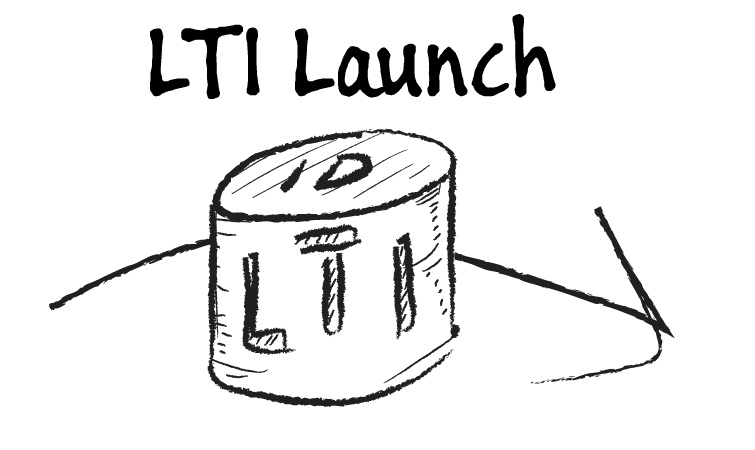

Learning Tool Interoperability
but interoperability with what?
Learning Platforms
aka LMS Learning Management Systems
like Moodle
but also Canvas, Blackboard, Brightspace, Sakai, ...
Each LTI Service defines a claim included in the id_token with the service endpoint(s) and authorized scopes
"https://purl.imsglobal.org/spec/lti-ags/claim/endpoint": {
"scope": [
"https://purl.imsglobal.org/spec/lti-ags/scope/lineitem",
"https://purl.imsglobal.org/spec/lti-ags/scope/lineitem.readonly",
"https://purl.imsglobal.org/spec/lti-ags/scope/result.readonly",
"https://purl.imsglobal.org/spec/lti-ags/scope/score"
],
"lineitems": "https://snl-moodle.cengage.com/mod/lti/services.php/3/lineitems?type_id=68",
"lineitem": "https://snl-moodle.cengage.com/mod/lti/services.php/3/lineitems/1924/lineitem?type_id=68"
}
Advantage = LTI 1.3 + Deep Linking Picker flow + Assignment & Grades Service + Names and Roles Service